<ion-header>
  <ion-toolbar [color]="'dark'">
    <ion-title>Chat App</ion-title>
    <ion-buttons slot="end">
      <ion-button (click)="signOut()">
        <ion-icon name="log-out-outline"></ion-icon>
      </ion-button>
    </ion-buttons>
  </ion-toolbar>
</ion-header>
<ion-content [fullscreen]="true" [color]="'medium'">
  <div class="relative h-full chats">
    <button
      class="bg-gray-600 text-2xl text-white font-bold rounded-full px-5 py-3 absolute bottom-5 right-5"
      routerLink="/list-contacts"
    >
      +
    </button>
    <ion-list class="chats">
      <ion-searchbar
        color="medium"
        [placeholder]="'Buscar contacto'"
        (ionInput)="filterChats($event.target.value!)"
        debounce="500"
      ></ion-searchbar>
      <div
        *ngFor="let chat of filterChatsBk"
        class="mt-3 mx-2"
        [routerLink]="'/chat/'+ chat.chat.user.id"
      >
        <ul class="w-full flex items-center gap-2">
          <div>
            
          </div>
          <div class="w-full">
            <li class="flex justify-between gap-5 w-full">
              <span class="font-bold">{{ chat.chat.user.username }}</span>
              <div class="flex items-center gap-1">
                <ion-icon name="time-outline"></ion-icon>
                <span class="time"
                  >{{getTime(chat.lastMessage.createdAt)}}</span
                >
              </div>
            </li>
            <li>
              <div class="flex items-center gap-1">
                <ion-icon
                  name="checkmark-done-outline"
                  class="text-gray-400"
                ></ion-icon>
                <span class="last-message">{{chat.lastMessage.message}}</span>
              </div>
            </li>
          </div>
        </ul>
      </div>
    </ion-list>
  </div>
</ion-content>
